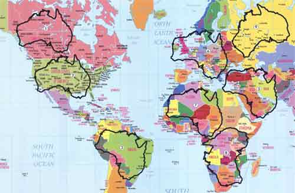
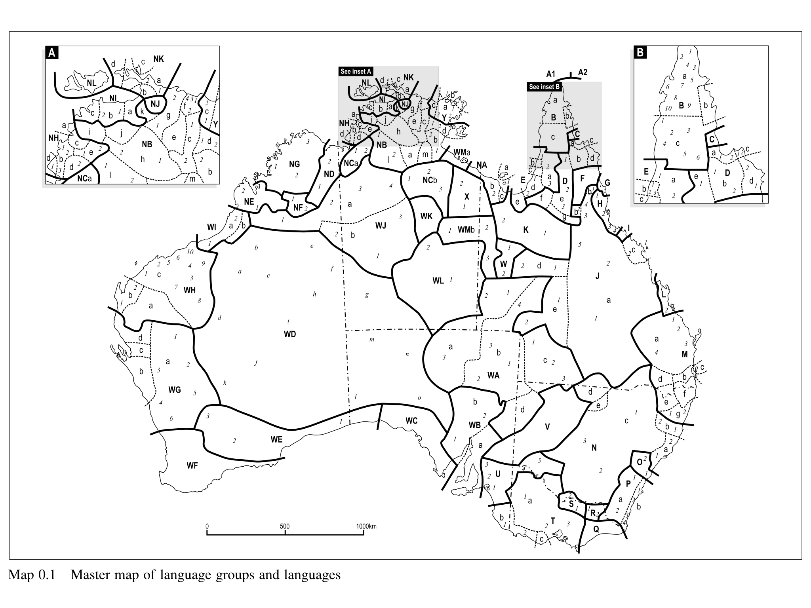
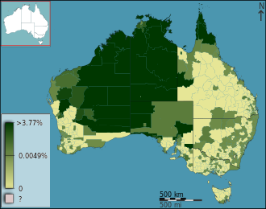
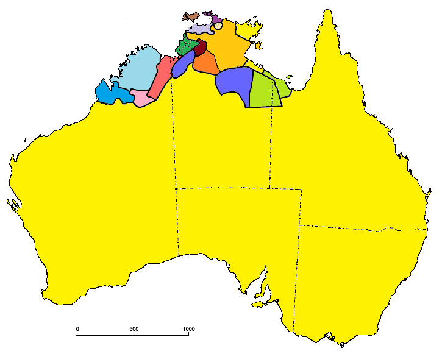
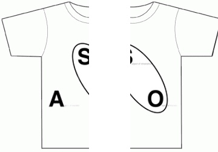
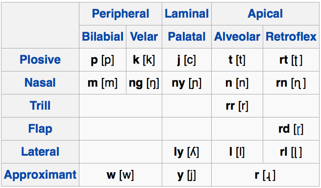
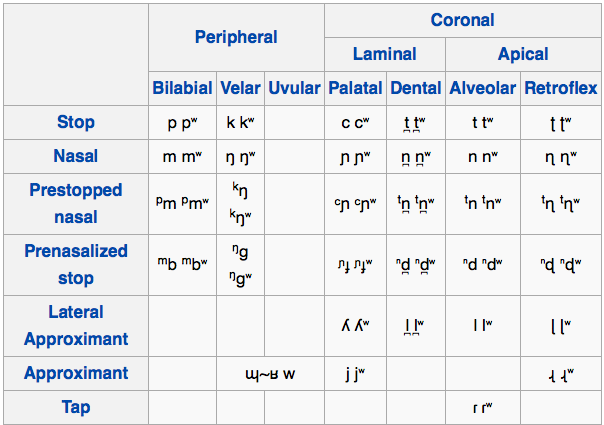
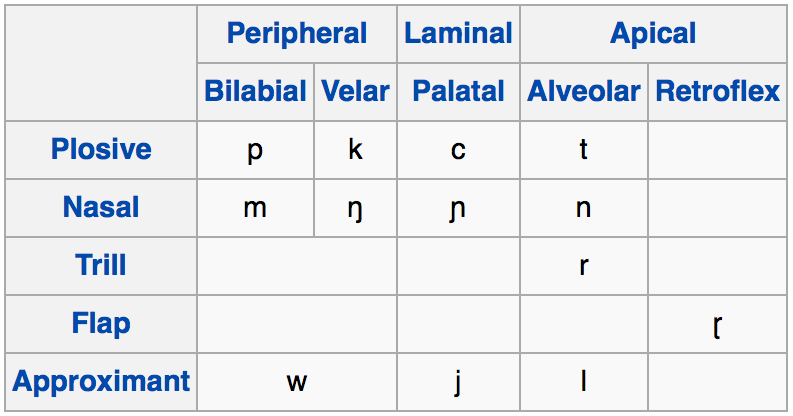

Men At Work - Down Under
(Unfortunately, the Dyribal Rap Scene doesn’t appear too robust)
One tonal slip-up led Mr Zuckerberg to claim that Facebook had just 11 mobile users instead of one billion.
While most agreed that his pronunciation was far from fluent, most were also impressed that he had attempted it at all.
Languages of Australia
Features of Australian Languages
Taboos and Taboo Avoidance


76.8% of Australians speak only English at home.
Australian had around 400 indigenous languages before Europeans showed up
The number of individual languages listed for Australia is 390. Of these, 213 are living and 177 are extinct. Of the living languages, 7 are institutional, 18 are developing, 12 are vigorous, 35 are in trouble, and 141 are dying. (Source)

Pama-Nyungan
Everything else

Ergativity (often split)
Few vowels (usually /i, a, u/)
Few voicing contrasts
Lots of places of articulation
Taboos and “Mother in law” languages
|  |
Tiwi (Isolate) - i a o u
Warlpiri (P-N) - i i: a a: u u:
Walmajarri (P-N) - i i: a a: u u:
Wati (P-N) - i i: a a: u u:
Dyirbal (P-N) - i a u
Arrernte (P-N) - ə a



Nilo-Saharan
Dravidian
Tai-Kadai
Indo-European:Slavic
Tai-Kadai
Indo-European:Slavic
Both Warlpiri and Arrernte are spoken by around 3,000 people.
A prohibition on a behavior, action, or topic of discussion based on moral or religious grounds
Some taboos of action
Some taboos of discussion
Some taboos of conversation
These can and do change over time
Think about things that can’t be done, topics that can’t be discussed, and people you can’t speak with.
Linguistic mechanisms to avoid breaking a cultural taboo
Talking about something without really talking about it
A less direct or “harsh” word for a concept which we don’t want to discuss.
These turn into “safe” terms for tabooed concepts
“Downsizing” vs. “Firing everybody”
“Neutralize” vs. “Murder”
“Vertically Challenged” vs. “Short”
Euphemisms must be replaced regularly due to “pejoration”
“Imbecile”
“Idiot”
“Moron”
“Slow”
“Retarded”
“Intellectually/Mentally/Developmentally Disabled”
lame / crippled → handicapped → disabled → physically challenged → differently abled → People with disabilities.
shell shock (World War I) → battle fatigue (World War II) → operational exhaustion (Korean War) → posttraumatic stress disorder
“The facilities” for “Bathroom”
“Collateral damage” for “accidentally killed civilians”
“Dismiss” for “fire (an employee)”
“slaughtered” for “murdered”
“put to sleep” for “euthanize”
Lays out strongly tabooed topics, groups, and ideas, then dictates “safe” euphemisms and approaches to discussing them
The “safe” euphemisms change regularly, and proper use signals political sensitivity
“Colored” -> “Negro” -> “Black” -> “African American” -> “Black”
“Transgendered” -> “Transgender” -> “Trans”
“Gay” -> “Gay/Lesbian” -> “LGBT” -> “LGBTQ” -> “LGBTTQQIAAP”
(Lesbian, Gay, Bisexual, Transgender, Transsexual, Queer, Questioning, Intersex, Asexual, Ally, Panssexual)
Improper use or use of dated terms violates the taboo within this culture
(Whenever you think about judging other cultures for weird taboos, just think about this system in the US.)
Mother-in-law can’t talk to son-in-law
Father-in law can’t talk to Daughter-in-law
Of-age Brothers and sisters can’t talk
The dead aren’t referred to by name
The word is removed outright from the language
This lasts 1-3 years.
Specific “sub-languages” (grammars and vocabularies) for dealing with tabooed relatives
This is sort of an extension of the honorific registers we’ve talked about before.
Two “forms” of the language
“Guwal”: The general-use form of the language
“Dyalŋuy”: A sub-form used only with tabooed relatives
| ### Dyalŋuy |
| * Has around 1/4 of the vocabulary |
| * Doesn’t have many specialized terms |
| * Uses different words for the same meanings |
| * ‘to ask’ is baŋarrmba-l in Dyalŋuy |
| * ‘to ask’ is ŋanba-l in Guwal |
| * The lack of words makes speakers resort to fun tricks to express themselves |
| * Causative/Intranstive Markers |
When somebody dies, you can’t use their name
Avoid mentioning the dead by using other names
Don’t say “Mary”, say “that old brown-haired woman from Denver”
Don’t say “Michael Bay”, just say “that guy who makes crappy movies”
Borrow a word to replace the tabooed word
Australia had a rich linguistic scene
Australian Languages have a Language Area going on
Pama-Nyungan Languages are the predominant indigenous language family there
They’ve got awesome features.
Taboo avoidance is awesome.